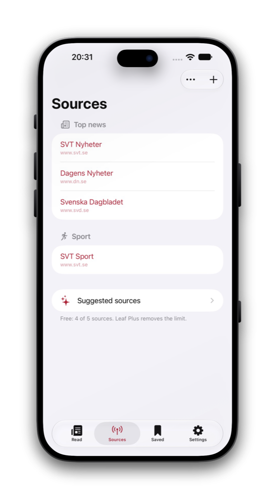
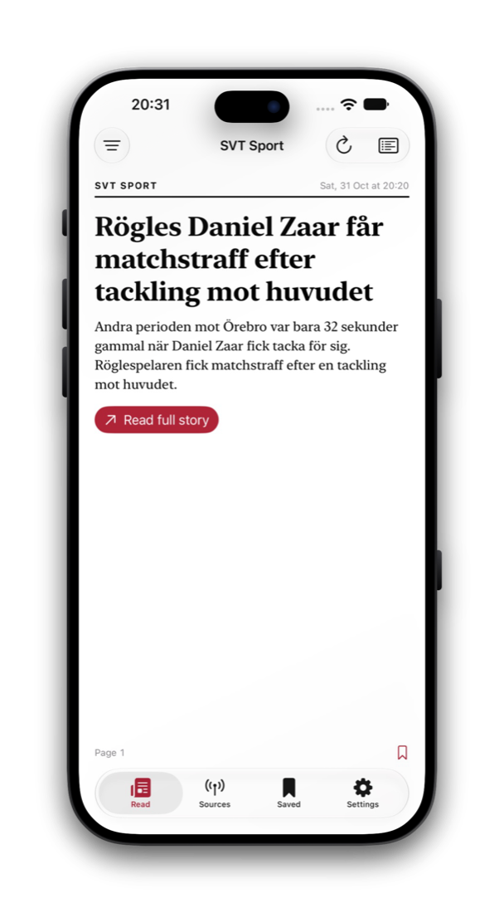
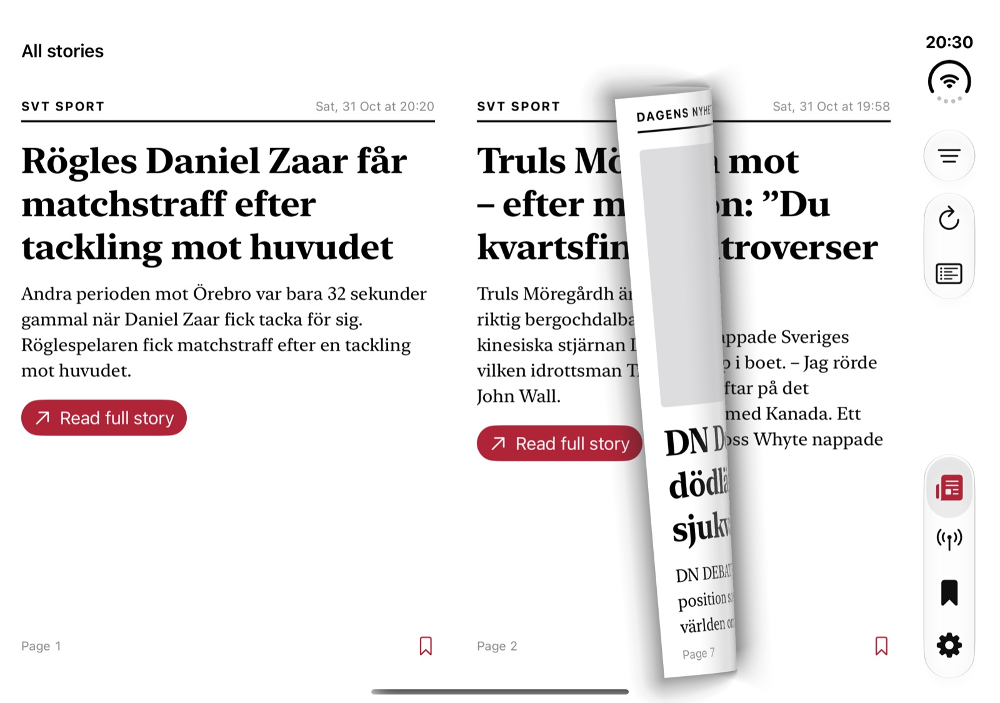
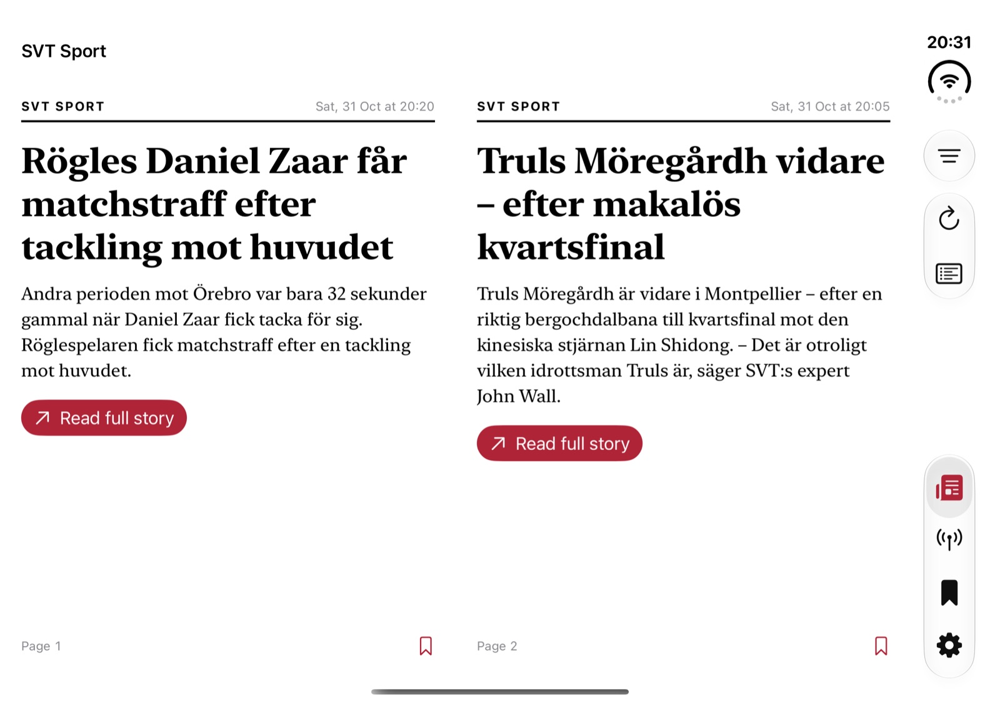

RSS reader · iPhone · iPad · iPhone Duo
Leaf.
The news, one page at a time.
Follow the sources you choose and turn each story like a page in a newspaper.
Turn the page.
Not the scroll.


Pages that turn
A story is a page.
No endless scroll. A story is a page, the next story is the next page, and turning it feels like paper.
iPhone Duo
Two pages. One spine.
Open the Duo and the pages sit side by side with the spine in the crease. Fold it part way and the stories keep clear of the fold.


Sources
Your sources. Your front page.
Suggested feeds follow your device’s country, sorted by section. Or paste any feed or website address and Leaf finds the feed.
Reading
Read it your way.
Search, jump from the table of contents, show only unread stories, and choose typeface, text size and a paper or sepia background.
Free to read. Leaf Plus is optional. No accounts, no ads and no analytics.
Details
A newspaper that is yours.
The sources are your own and the front page is made fresh each time.
Where you left off.
Your sources, saved stories and reading place sync between your devices through iCloud, and are in your iCloud backup, so a new phone picks up on the same page.
The front page, on your Home Screen.
The latest headlines on your Home Screen and Lock Screen. Tap one to open that page.
Bring your list.
Paste a feed or a website address, or move your list with an OPML file.
Sources for where you live.
Suggested feeds follow your country: Sweden first, then Norway, Denmark, Finland, Germany, France, Spain, the UK, the US and a global list.
Free to read. Plus to go further.
Leaf Plus is an optional subscription, monthly or yearly: as many sources as you like, notifications from the sources you pick, a morning edition and saved stories. Cancel any time in your Apple ID settings.
Private by design.
No accounts, no ads, no analytics and no servers of mine. Notifications are made on your device. Read the privacy policy.
Get Leaf.
In TestFlight beta now. For iPhone and iPad with iOS 26 or later, in English and Swedish. The fold-aware iPhone Duo layout needs iOS 27.1.